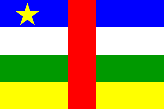

<body style="background-color: rgb(241, 153, 186)">
    <div class="row">
        <h3>some flags i find ugly/flag facts</h3>
        click the flags to learn more!
        also visit the page of <a href="flags.html" target="index">good flags</a>
        <div class="column">
            <p>Central African Republic 1958-present</p><a href="https://www.fotw.info/flags/cf.html"></a>
        </div>
        <div class="column">
            <p>United States 1960-present</p><a href="https://www.fotw.info/flags/us.html"></a>
        </div>
    </div>
</body>
